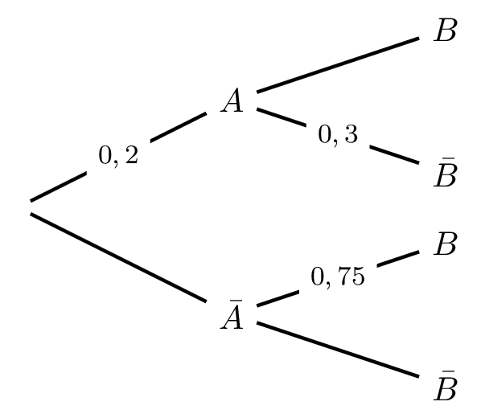
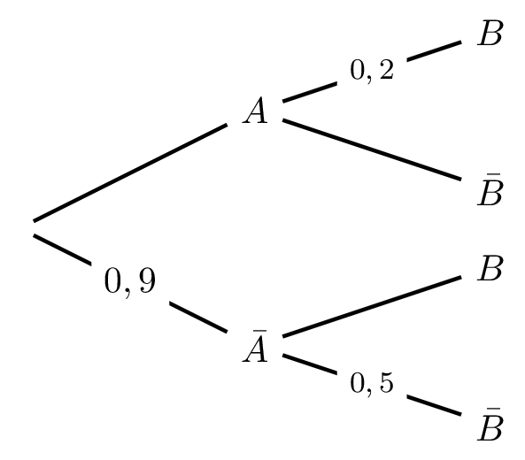
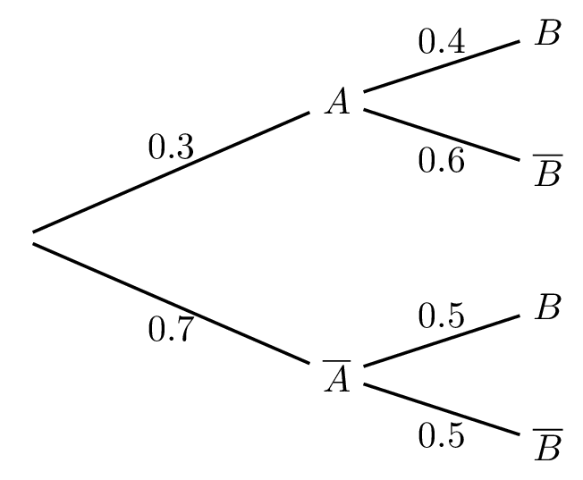
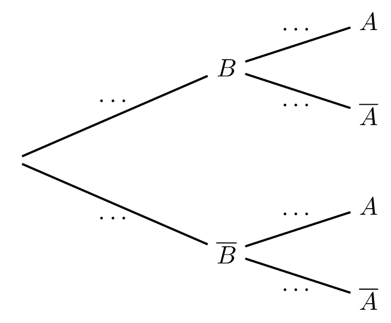
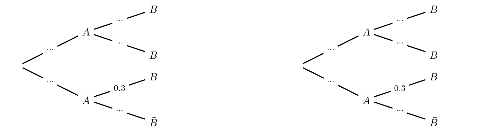
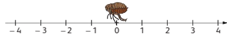
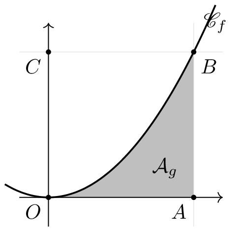

Feuilles d’exercices — Probabilités condtionnelles
Rappels sur les probabilités
Exercice 1
Exercice 1 :
On lance un dé truqué dont les faces sont numérotées de 1 à 6. La loi de probabilité est donnée par le tableau suivant :
| face | 1 | 2 | 3 | 4 | 5 | 6 |
|---|---|---|---|---|---|---|
| probabilité | \(\LH{\frac{1}{12} }\) | \(a\) | \(\frac{1}{4}\) | \(\frac{1}{12}\) | \(\frac{1}{3}\) | \(\frac{1}{12}\) |
- Déterminer la valeur de \(a\).
- Écrire chacun des événements suivants sous forme d’un ensemble puis déterminer sa probabilité.
- A : Obtenir un chiffre pair
- B : Obtenir un chiffre inférieur ou égal à 5
- \(\mathrm{C} = \mathrm{A} \cup \mathrm{B}\).
Exercice 2
Exercice 2 :
Une urne contient 2 boules vertes, 1 boule rouge et 1 boule noire. On effectue successivement et avec remise deux tirages au hasard d’une boule dans l’urne. On note la couleur de chaque boule tirée. Une issue de cette expérience est un couple de deux couleurs dans l’ordre d’apparition.
- À l’aide d’un arbre, déterminer tous les tirages possibles puis toutes les issues de l’expérience. (Dans l’arbre, on pourra noter \(\mathrm{V}_{1}\) et \(\mathrm{V}_{2}\) les 2 boules vertes, R la boule rouge et N la boule noire.)
- Quel est l’univers de cette expérience?
- Déterminer la probabilité de l’événement A : les deux boules sont de la même couleur.
- On considère l’événement B : Au moins une des boules tirées est noire.
- Décrire par une phrase l’événement \(\overline{\mathrm{B}}\).
- Déterminer la probabilité de \(\overline{\mathrm{B}}\) et en déduire celle de B.
- Décrire par une phrase l’événement \(\overline{\mathrm{B}}\).
Exercice 3
Exercice 3 :
Le tableau ci-dessous donne la répartition des communes de deux départements en fonction de leur nombre d’habitants \(N\). (Source : Insee.)
| Charente-Maritime | Yvelines | Total | |
|---|---|---|---|
| \(N < 500\) | 215 | 54 | |
| \(500 \leqslant N < 1000\) | 129 | 67 | |
| \(1000 \leqslant N < 3500\) | 99 | 58 | |
| \(N \geqslant 3500\) | 29 | 83 | |
| Total |
- Compléter le tableau.
- On choisit au hasard une commune parmi les communes de ces deux départements. Quelle est la probabilité que cette commune soit une commune de Charente-Maritime?
- On choisit au hasard une commune de Charente-Maritime. Quelle est la probabilité que cette commune ait moins de 1000 habitants?
- On choisit au hasard une commune des Yvelines. Quelle est la probabilité que cette commune ait moins de 1000 habitants?
- On choisit au hasard une commune de Charente-Maritime. Quelle est la probabilité que cette commune ait moins de 1000 habitants?
- On choisit au hasard une commune parmi celles qui ont moins de 1000 habitants. Quelle est la probabilité que ce soit une commune de Charente-Maritime?
Exercice 4
Exercice 4 :
Dans une population, les individus peuvent posséder (ou non) un caractère génétique \(a\) ou un caractère génétique \(b\) (ou les deux caractères). La probabilité, pour un individu choisi au hasard, de posséder le caractère \(a\) est 0,8, la probabilité de posséder le caractère \(b\) est 0,6 et la probabilité de posséder les deux caractères est 0,45.
On choisit un individu au hasard dans la population et on note : - A : l’individu possède le caractère \(a\) - B : l’individu possède le caractère \(b\).
- Donner la probabilité des événements \(\mathrm{A}\), \(\mathrm{B}\) et \(\mathrm{A} \cap \mathrm{B}\) et en déduire la probabilité \(\mathrm{A} \cup \mathrm{B}\).
- On considère l’événement C : l’individu ne possède pas les deux caractères à la fois. Exprimer C à l’aide de A et B et en déduire la probabilité de C.
- On considère l’événement D : l’individu ne possède aucun des deux caractères. Exprimer D à l’aide de A et B et en déduire la probabilité de D.
Exercice 5
Exercice 5 :
On dispose de deux dés cubiques parfaitement équilibrés dont les faces sont numérotées de 1 à 6. On considère l’expérience aléatoire qui consiste à lancer simultanément ces deux dés et à soustraire le plus petit des deux nombres au plus grand. Par exemple, si on obtient 3 et 5, l’issue est \(5-3=2\). Si on obtient le même nombre sur les deux dés, l’issue est 0.
Compléter le tableau ci-dessous et en déduire l’univers de cette expérience.
1 2 3 4 5 6 1 2 3 4 5 6 Déterminer la probabilité de chacun des événements élémentaires et présenter les résultats sous forme d’un tableau similaire à celui de l’exercice 1.
L’expérience précédente est utilisée pour un jeu d’argent. On paie \(3\) € pour jouer et on gagne autant d’euros que l’issue obtenue. Par exemple, si on obtient 5 et 3 sur les dés, on gagne \(2\) €. A-t-on intérêt à jouer à ce jeu?
Probabilités conditionnelles
Exercice 6
Exercice 6 :
On choisit au hasard une personne dans une population. On note les événements H « la personne est un homme » et M « la personne est majeure ».
- Associer chaque proposition à une probabilité.
| Proposition | Probabilité |
|---|---|
| 40% des hommes sont majeurs | \(P_H(M)\) |
| 58% des personnes sont majeures | \(P(M)\) |
| 22% des personnes sont des hommes majeurs | \(P(H \cap M)\) |
| 45% des personnes sont des femmes | \(P(\overline{H})\) |
| Parmi les majeurs, 38% sont des hommes | \(P_{\overline{M}}(H)\) |
| 80% des femmes sont majeures | \(P_M(H)\) |
| Près d’un tiers des personnes sont des hommes mineurs | \(P(H \cap \overline{M})\) |
- À l’aide des renseignements fournis ci-dessus, calculer la probabilité que la personne choisie soit un homme sachant qu’elle est mineure.
Exercice 7
Exercice 7 :
Soit \(A\) et \(B\) deux événements dont nous savons que : \(p\left(A\right)=0,35\), \(p_A\left(B\right)=0,42\) et \(p_{\overline{A}}\left(\overline{B}\right)=0,18\).
- Placer les données sur un arbre pondéré.
- Compléter l’arbre avec les probabilités manquantes.
Exercice 8
Exercice 8 :
Soit \(A\) et \(B\) deux événements.
- On donne : \(p\left(A\right)=0,45\) et \(P\left( A \cap B\right)=0,15\). Calculer \(p_A\left(B\right)\).
- On donne : \(p\left(A\right)=0,38\) et \(p_A\left(B\right)=0,5\). Calculer \(P\left( A \cap B\right)\).
- On donne : \(P\left( A \cap B\right)=0,18\) et \(p_A\left(B\right)=0,6\). Calculer \(p\left(A\right)\).
- On donne : \(P(B)=0,4\) et \(p(\bar{A} \cap \bar{B})=0,15\). Calculer la probabilité que \(A\) ne soit pas réalisé sachant que \(B\) ne l’est pas.
Exercice 9
Exercice 9 :
Sachant que \(P(A)=0,4\), \(P(A\cap B)=0,3\) et \(P(\overline{A}\cap B)=0,2\), calculer \(P_A(B)\) et \(P_{\overline{A}}(B)\).
En déduire \(P_A(\overline{B})\) et \(P_{\overline{A}}(\overline{B})\).
Exercice 10
Exercice 10 :
Sachant que \(P(A)=0,5\), \(P(A\cap B)=0,2\) et \(P(\overline{A}\cap B)=0,4\), calculer \(P_A(B)\) et \(P_{\overline{A}}(B)\).
En déduire \(P_A(\overline{B})\) et \(P_{\overline{A}}(\overline{B})\).
Exercice 11
Exercice 11 :
Sachant que \(P(A)=0,6\), \(P(A\cap B)=0,4\) et \(P(\overline{A}\cap B)=0,2\), calculer \(P_A(B)\) et \(P_{\overline{A}}(B)\).
En déduire \(P_A(\overline{B})\) et \(P_{\overline{A}}(\overline{B})\).
Exercice 12
Exercice 12 :
Dans une entreprise de 300 salariés, 60% sont des femmes. Parmi les hommes, 35% ont plus de 10 ans d’ancienneté. Parmi les femmes, 15% ont plus de 10 ans d’ancienneté.
- Recopier et compléter le tableau d’effectifs suivant.
| Femmes | Hommes | Total | |
|---|---|---|---|
| Moins de 10 ans d’ancienneté | |||
| Plus de 10 ans d’ancienneté | |||
| Total | 300 |
- On choisit un salarié de l’entreprise au hasard.
- Calculer la probabilité \(p_1\) que le salarié soit une femme avec plus de 10 ans d’ancienneté.
- Calculer la probabilité \(p_2\) que le salarié soit une femme sachant qu’il a plus de 10 ans d’ancienneté.
- Calculer la probabilité \(p_3\) que le salarié ait plus de 10 ans d’ancienneté sachant que c’est une femme.
- Calculer la probabilité \(p_1\) que le salarié soit une femme avec plus de 10 ans d’ancienneté.
Exercice 13
Exercice 13 :
Soient \(A\) et \(B\) deux événements dont les probabilités sont données dans les tableaux ci-dessous.
Cas 1 :
| \(A\) | \(\overline A\) | Total | |
|---|---|---|---|
| \(B\) | 0,25 | ||
| \(\overline B\) | 0,4 | ||
| Total | 0,6 |
Cas 2 :
| \(A\) | \(\overline A\) | Total | |
|---|---|---|---|
| \(B\) | 0,45 | 0,9 | |
| \(\overline B\) | |||
| Total | 0,55 |
- Recopier et compléter le tableau.
- Calculer \(P_A(B)\) et \(P_B(A)\).
Exercice 14
Exercice 14 :
Une enquête sur l’ensemble des clients d’un garage durant l’année passée, montre que 55% des acheteurs potentiels d’un modèle automobile souhaitent qu’il soit équipé d’un GPS intégré, 65% souhaitent la climatisation et 30% souhaitent les deux.
- Établir un tableau illustrant cette situation.
- On choisit au hasard une fiche de l’un des clients de ce garage. Quelle est la probabilité qu’il ne souhaite pas de GPS intégré ? qu’il souhaite au moins l’un des deux équipements ?
- On choisit au hasard un individu parmi ceux qui souhaitent la climatisation. Quelle est la probabilité qu’il souhaite aussi un GPS ? Donner l’arrondi au centième.
- Calculer la probabilité pour qu’un client, qui ne souhaite pas le GPS, souhaite la climatisation. Donner l’arrondi au centième.
Exercice 15
Exercice 15 :
Dans une classe de 35 élèves, 18 élèves pratiquent un sport, 7 jouent un instrument de musique et 20 pratiquent l’une ou l’autre de ces deux activités. On choisit un élève de la classe au hasard. On note respectivement S et M les événements « l’élève pratique un sport » et « l’élève joue un instrument de musique ».
- Calculer la probabilité de \(S\), \(M\) et \(S \cup M\).
- En déduire la probabilité que l’élève pratique à la fois un sport et joue un instrument de musique.
- Calculer la probabilité de \(S\), \(M\) et \(S \cup M\).
- Calculer la probabilité que l’élève joue un instrument de musique sachant qu’il pratique un sport.
- Calculer la probabilité que l’élève pratique un sport sachant qu’il joue un instrument de musique.
Exercice 16
Exercice 16 : On tire successivement et avec remise deux jetons dans un sac qui en contient six, numérotés de 1 à 6.
Calculer la probabilité que la somme des deux résultats soit impaire sachant que le résultat du premier lancer est 1.
Formules des probabilités totales
Exercice 17
Exercice 17 :
Les affirmations suivantes sont-elles vraies ou fausses ? Justifier votre réponse.
- Un événement A d’un univers \(\Omega\) et son événement contraire \(\overline{A}\) forment une partition de l’univers \(\Omega\).
- Soient A, B et C trois événements formant une partition d’un univers \(\Omega\). On a \(P(C) = P(\Omega) - P(A) - P(B)\).
- Si A et B sont deux événements d’un univers \(\Omega\) de probabilités non nulles, alors on a :
- \(P(B) = P_A(B) + P_{\overline{A}}(B)\)
- \(P(\overline{B}) = 1 - P(A \cap B) - P(\overline{A} \cap B)\)
- \(P(B) = P_A(B) + P_{\overline{A}}(B)\)
Exercice 18
Exercice 18 :
Soient \(A\) et \(B\) deux événements.
 
Dans chacun des cas ci-dessus :
- Reproduire et compléter l’arbre ci-dessus.
- Calculer \(P(A\cap B)\).
- En déduire \(P(B)\).
- Calculer \(P(\overline B)\).
Exercice 19
Exercice 19 :
Une agence de voyage propose deux durées de séjours, le week-end ou la semaine, et deux types de destinations, France ou étranger.
Parmi les dossiers de l’agence on constate que: - \(60\%\) des séjours ont lieu en France; - \(45\%\) des séjours en France durent une semaine; - \(75\%\) des séjours à l’étranger durent une semaine.
On choisit un dossier au hasard et on note: - \(F\) l’événement: « Le séjour a lieu en France »; - \(S\) l’événement: « Le séjour dure une semaine »; - \(E\) l’événement contraire de \(F\).
- En utilisant les données de l’énoncé, déterminer les probabilités suivantes:
a) \(P\left(F\right)\) b) \(P_F\left(S\right)\) c) \(P_E\left(S\right)\).
- Dessiner un arbre pondéré modélisant cette situation.
- Calculer \(P\left( F \cap S\right)\), \(P\left( E \cap S\right)\).
- Calculer \(P\left( F \cap \overline{S}\right)\), \(P\left( E \cap \overline{S}\right)\).
- En déduire \(P\left(S\right)\) et \(P\left( \overline{S}\right)\).
Exercice 20
Exercice 20 :
Une situation est modélisée par l’arbre ci-dessous. \(A\) et \(B\) désignant deux événements. En utilisant l’arbre de gauche, compléter l’arbre de droite:
 
Exercice 21
Exercice 21 :
Une entreprise vend des calculatrices. Le service après-vente s’est aperçu qu’elles pouvaient présenter deux types de défauts, l’un lié au clavier et l’autre lié à l’affichage.
Des études statistiques ont permis à l’entreprise d’utiliser la modélisation suivante: - La probabilité pour une calculatrice tirée au hasard de présenter un défaut de clavier est égale à \(0,04\). - En présence du défaut de clavier, la probabilité que la calculatrice soit en panne d’affichage est de \(0,03\). - En l’absence de défaut clavier, la probabilité de ne pas présenter de défaut d’affichage est de \(0,94\).
On note \(C\) l’événement « la calculatrice présente un défaut de clavier » et \(A\) l’événement « la calculatrice présente un défaut d’affichage ».
- Déterminer les probabilités suivantes: \(p_{\overline{C}}\left(\overline{A}\right)\), \(p_C\left(A\right)\) et \(p\left(C\right)\).
- Construire un arbre pondéré décrivant cette situation.
- Déterminer les probabilités suivantes: \(p_{\overline{C}}\left(\overline{A}\right)\), \(p_C\left(A\right)\) et \(p\left(C\right)\).
- On choisit une calculatrice au hasard.
- Calculer la probabilité pour que la calculatrice présente les deux défauts.
- Calculer la probabilité pour que la calculatrice présente au-moins un défaut.
- Calculer la probabilité pour que la calculatrice présente le défaut d’affichage mais pas le défaut de clavier.
- Calculer la probabilité pour que la calculatrice présente les deux défauts.
Exercice 22
Exercice 22 :
Pour recruter des stagiaires, une entreprise organise des tests de sélection. Parmi les candidats qui se présentent aux épreuves, il y a \(60\%\) de garçons. Après avoir pris connaissance des résultats aux tests, l’entreprise engage \(70\%\) des garçons candidats et \(80\%\) des filles candidates.
On rencontre au hasard un candidat qui s’est présenté aux tests. 1. Quelle est la probabilité que ce candidat soit un garçon et qu’il soit engagé comme stagiaire?
2. Quelle est la probabilité que ce candidat soit une fille et qu’elle soit engagée comme stagiaire?
3. Calculer la probabilité que ce candidat soit engagé.
Exercice 23
Exercice 23 :
On s’intéresse à un pays fictif ayant l’organisation politique suivante : une oligarchie participative où le peuple élit des soi-disant représentants qui gouvernent dans leurs intérêts. L’assemblée censée représenter le peuple est composé de trois partis : le C’était Mieux Avant (à \(30\%\)), le Ne Changeons Rien (à \(15\%\)) et l’Illusion du Progrès (à \(55\%\)). On s’intéresse à la probabilité qu’un représentant pris au hasard dans l’assemblée serve ses propres intérêts. On note - \(A\) l’événement « le représentant est dans le parti C’était Mieux Avant » ; - \(R\) l’événement « le représentant est dans le parti Ne Changeons Rien » ; - \(P\) l’événement « le représentant est dans le parti de l’Illusion du Progrès » ; - \(I\) l’événement « le représentant sert ses intérêts ».
On sait que dans le parti C’était Mieux Avant, \(55\%\) des représentants servent leurs intérêts ; \(73\%\) pour le Ne Changeons Rien et \(61\%\) pour l’Illusion du Progrès.
- Dresser et compléter un tableau modélisant la situation à partir des informations ci-dessus.
- Quelle est la probabilité que le représentant tiré au hasard serve ses intérêts ?
- Sachant que le représentant sert ses intérêts, quelle est la probabilité qu’il vienne du parti Ne Changeons Rien ? Du C’était Mieux Avant ?
- Sachant que le représentant ne sert pas ses intérêts, quelle est la probabilité qu’il vienne du parti l’Illusion du Progrès ? Du C’était Mieux Avant ?
Exercice 24
Exercice 24 :
Willy a des pommiers dans son jardin de deux variétés : Golden et Elstar. Lors de sa récolte, il a constaté que 85% des pommes Golden et 80% des pommes Elstar sont consommables. Willy choisit une pomme au hasard. On note G « la pomme est de variété Golden », E « la pomme est de variété Elstar » et C « la pomme est consommable ». 1. Montrer que les événements G et E forment une partition de l’univers.
2. Les événements G et C forment-ils une partition de l’univers ? Pourquoi ?
Exercice 25
Exercice 25 :
Une université propose uniquement trois filières A, B ou C. Les étudiants doivent s’inscrire dans une seule des trois filières. On choisit au hasard un étudiant de l’université. La probabilité qu’il soit inscrit en filière A est le double de celle qu’il soit inscrit en filière B. La probabilité d’une inscription en filière A est le triple de celle en filière C. De plus, 20% des inscrits dans la filière A sont des filles, contre 30% pour la filière B et 40% pour la filière C.
On note A l’événement « l’étudiant est inscrit dans la filière A », B « l’étudiant est inscrit dans la filière B », C « l’étudiant est inscrit dans la filière C » et F « l’étudiant est une fille ».
- Montrer que les événements A, B et C forment une partition de l’univers.
- On note \(p\) la probabilité de l’événement A. Montrer que \(p + \frac{p}{2} + \frac{p}{3} = 1\).
- En déduire la probabilité de A.
- Montrer que les événements A, B et C forment une partition de l’univers.
- Construire un arbre pondéré.
- Calculer la probabilité que l’étudiant soit un garçon.
- Calculer la probabilité que l’étudiant soit dans la filière A sachant que c’est un garçon.
- Calculer la probabilité que l’étudiant soit dans la filière B sachant que c’est une fille.
- Calculer la probabilité que l’étudiant soit dans la filière A sachant que c’est un garçon.
Exercice 26
Exercice 26 :
Soient \(A\) et \(B\) deux événements d’un même univers.
Dans chacun des cas suivants compléter l’arbre de probabilité en faisant apparaître les calculs nécessaires.
- Cas A : On sait que \(P(B) = 0,4575\) et \(P(A \cap \bar{B}) = 0,1575\)
- Cas B : On sait que \(P(\bar{B}) = 0,8061\) et \(P(B \cap \bar{A}) = 0,1675\)

Notion d’indépendance
Exercice 27
Exercice 27 :
On considère les événements \(A\) et \(B\) de probabilités respectives \(\frac{7}{8}\) et \(\frac{2}{7}\) et tels que \(P(A\cap B)=\frac{1}{4}\). \(A\) et \(B\) sont-ils indépendants ?
Exercice 28
Exercice 28 :
On lance un dé équilibré à six faces et on considère les événements suivants. 1.•\(A\) : le résultat est un nombre supérieur ou égale à \(4\) 2.•\(B\) : le résultat est un nombre pair
- Représenter la situation par un arbre de probabilité.
- Comment remarque-t-on sur l’arbre que \(A\) et \(B\) ne sont pas indépendants ?
Exercice 29
Exercice 29 :
\(A\) et \(B\) sont deux événements indépendants tels que \(P(A)=\dfrac{1}{3}\) et \(P(B)=\dfrac{2}{5}\).
Calculer \(P(A\cap B)\) puis \(P(\overline{A}\cap B)\).
Exercice 30
Exercice 30 :
\(A\) et \(B\) deux événements tels que \(P(A)=\dfrac{1}{4}\), \(P(B)=\dfrac{1}{5}\) et \(P(A\cap B)=\dfrac{1}{10}\).
\(A\) et \(B\) sont-ils indépendants ?
Exercice 31
Exercice 31 :
\(A\) et \(B\) sont deux événements indépendants de même probabilité et \(P(A\cap B)=\dfrac{1}{36}\).
Calculer \(P(A)\).
Exercice 32
Exercice 32 :
Chaque matin, Antoine peut être « victime » de deux événements indépendants : R « il n’entend pas son réveil » et V « son pneu de vélo est victime d’une crevaison ». Il a observé que chaque jour de la semaine : \[ P(R) = 0.1 \quad \text{et} \quad P(V) = 0.05 \]
Lorsqu’au moins un des deux événements se produit, Antoine est en retard au lycée ; sinon il est à l’heure.
- Donner les probabilités ( P() ) et ( P_{}(V) ).
- Calculer la probabilité qu’Antoine soit à l’heure au lycée un jour donné.
Exercice 33
Exercice 33 :
On considère deux événements \(A\) et \(B\) tels que \(P(A)=p\), \(P(B)=P(\overline{A})\) et \(P(A \cap B)=0,2p+0,15\). 1. Montrer que, pour tout \(p \in \R\), \[-p^2+0,8p-0,15=(0,3-p)(p-0,5)\] 2. Trouver la probabilité \(p\) telle que \(A\) et \(B\) soient indépendants.
Exercice 34
Exercice 34 :
On considère deux événements \(A\) et \(B\) tels que \(P(A \cap B)=0,8\) et \(P(A \cup B)=0,9\). 1. Montrer que, pour tout \(p \in \R\), \[x^2-1,7x+0,8=(x-0,85)^2+0,0775\] 2. Montre que \(A\) et \(B\) ne peuvent pas être indépendants.
Exercice 35
Exercice 35 :
Dans un collège, les élèves doivent choisir une option parmi latin et théâtre et une langue vivantes parmi allemand et italien . Le tableau ci-dessous donne la répartition des élèves.
- Les événements faire du théâtre et de l’italien et faire du théâtre sont-ils indépendants ?
- Les événements faire du latin et faire de l’allemand sont-ils indépendants ?
- Les événements faire du latin et faire du théâtre sont-ils indépendants ?
| Italien | Allemand | Total | |
|---|---|---|---|
| Latin | 30 | 120 | 150 |
| Théâtre | 90 | 80 | 170 |
| Total | 120 | 200 | 320 |
Exercice 36
Exercice 36 :
On tire une carte dans un jeu de 32 cartes. Dans chacun des cas suivants, dire si les événements sont indépendants. 1. \(A\) tirer un roi et \(B\) tirer un rouge ;
2. \(A\) tirer un roi et \(B\) ne pas tirer un as ;
3. \(A\) tirer un roi, ou une dame rouge et \(B\) tirer un rouge .
Répétitions d’épreuves
Exercice 37
Exercice 37 :
Chaque année, une ruche a un risque de \(5\%\) d’être attaquée par un frelon asiatique. Dans ce cas, ses chances de survie sont de \(10\%\). Si ce n’est pas le cas, ses chances de survie sont de \(90\%\). Chaque année, les risques sont les mêmes et les attaques sont indépendantes.
- Modéliser la situation par un arbre de probabilité.
- Quelle est la probabilité que la ruche survive une année ?
- En déduire quelle est la probabilité que la ruche survive trois années de suite.
- Si la menace du frelon n’existait pas, qu’elle serait alors cette même probabilité ?
Exercice 38
Exercice 38 :
On lance 10 fois de suite une pièce équilibrée. Quelle est la probabilité d’obtenir au moins une fois face au cours des 10 lancers ? On donnera le résultat sous forme d’une fraction irréductible.
Exercice 39
Exercice 39 :
Une épreuve d’examen comporte un QCM composé de trois questions. Chaque question fait l’objet de trois propositions de réponses, dont une seule est exacte. Pour établir le barème, on étudie la situation correspondant à un candidat qui répondrait au hasard et de manière indépendante à chacune des trois questions.
- Quelle est la probabilité, pour une question donnée, de choisir la réponse exacte ?
- Construire un arbre pondéré décrivant toutes les réponses possibles au QCM.
- Calculer la probabilité d’obtenir les trois réponses exactes. Justifier.
- Calculer la probabilité d’obtenir trois réponses inexactes.
- Combien y a-t-il de chemins complets dans l’arbre qui correspondent à une réponse exacte et deux réponses inexactes ?
- Calculer la probabilité d’obtenir une seule réponse exacte sur les trois questions.
Exercice 40
Exercice 40 :
Le Problème des Deux Enfants
On suppose que la probabilité de donner naissance à une fille est la même que celle de donner naissance à un garçon : \(P(F)=P(G)=\dfrac{1}{2}\). On admet de plus que le sexe d’un enfant à la naissance est indépendant de ceux nés avant. Vous allez chez une personne dont vous savez qu’elle a deux enfants mais dont vous ignorez le sexe. C’est une fille qui vous ouvre la porte ; on ne sait pas si c’est l’aînée ou pas des deux enfants.
Quelle est la probabilité l’autre enfant soit un garçon : \(\dfrac{1}{2}\) ou \(\dfrac{2}{3}\) ? Justifier.
Exercice 41
Exercice 41 :

Une puce est placée en 0 sur la droite graduée ci-dessus. À chaque rebond, elle saute à droite ou à gauche de manière aléatoire. On note D et G les événements « la puce effectue un saut à droite » et « la puce effectue un saut à gauche ».
- La puce a effectué le déplacement DDGDG. En combien s’est-elle arrêtée ?
- La puce effectue trois sauts.
- Construire un arbre pondéré traduisant tous les déplacements possibles. Combien y en a-t-il ?
- Calculer la probabilité qu’elle effectue un seul saut à gauche.
- Calculer la probabilité qu’elle s’arrête en +1.
- Peut-elle s’arrêter en 0 ? Justifier.
- Construire un arbre pondéré traduisant tous les déplacements possibles. Combien y en a-t-il ?
- On souhaite automatiser le comportement de la puce à l’aide d’un algorithme et déterminer combien de fois elle passe par 0. On donne ci-dessous l’algorithme rédigé en langage Python :
from random import *
p = 0
k = 0
for i in range(1, n+1):
d = randint(0, 1)
if d == 0:
p = p - 1
else:
p = p + 1
if p == 0:
k = k + 1
return k- Expliquer les rôles des variables
petk.
- Expliquer le rôle de la variable
d.
- À l’aide de l’algorithme, simuler dix déplacements de la puce. Donner le parcours effectué, la position sur laquelle la puce s’arrête et le nombre de fois où elle est passée par 0.
- Compléter l’algorithme pour qu’il affiche la position finale de la puce.
Exercice 42
Exercice 42 :
Pour savoir si un mail est indésirable ou pas, celui-ci est testé par un algorithme. On note \(T\) l’événement « le test est positif » et \(I\) l’événement « le mail est indésirable ».
- Reproduire et compléter le tableau ci-dessous.
| \(I\) | \(\overline I\) | Total | |
|---|---|---|---|
| \(T\) | 0,23 | ||
| \(\overline T\) | 0,73 | ||
| Total | 0,25 |
- Quelle est la probabilité que le test soit négatif sachant que le mail est indésirable ?
- Quelle est la probabilité que le test soit positif sachant que le mail est désirable ?
- En déduire la probabilité que l’algorithme se trompe.
- On applique le test à dix mails indépendamment les uns des autres sans savoir s’ils sont indésirables ou pas. Quelle est la probabilité qu’aucun test ne soit positif ?
- Quelle est alors la probabilité d’avoir au moins un test positif parmi les dix tests ?
Approfondissement et bilans
Exercice 43
Exercice 43 :
La méthode de Monte Carlo est une technique permettant de calculer des approximations d’aires difficiles à obtenir à l’aide d’outils géométriques ou analytiques de façon simple grâce aux probabilités.
On considère \(f\) la fonction carrée et on souhaiterai connaître l’aire sous sa courbe sur l’intervalle \([0\,;\,1]\) représentée en gris ci-contre. On notera cette aire \(\mathcal{A}_g\).

- On place au hasard un point \(M(x \,;\, y)\) dans le carré \(OABC\). Exprimer en fonction en fonction de \(\mathcal{A}_g\) et \(\mathcal{A}_{OABC}\), l’aire du carré \(OABC\), la probabilité que \(M\) soit dans la zone grise.
- À quels intervalles appartiennent \(x\) et \(y\) ?
- À quelle(s) condition(s) sur \(x\) et \(y\) \(M\) appartient à la zone grise ?
- Pour estimer l’aire \(\mathcal{A}_g\), on va prendre 1000 points au hasard dans le le carré \(OABC\) et déterminer la proportion appartenant à \(\mathcal{A}_g\). C’est le but de l’algorithme ci-dessous. Compléter le programme suivant afin d’approcher l’aire cherchée
from random import *
def approche_aire(k):
c=0
for k in range range(1, ........):
x = ........
y = ...........
if ................ :
c=c+1
return ...............- Comment améliorer l’estimation de \(\mathcal{A}_g\) ?
- (*) En considérant le quart de disque trigonométrique inclus dans le carré \(OABC\), écrire et coder en Python un programme permettant d’approcher \(\pi\).
Exercice 44
Exercice 44 : Exercice 44 : Extrait bac, Pondichery 2018 Une entreprise conditionne du sucre blanc provenant de deux exploitations U et V en paquets de 1 kg et de différentes qualités. Le sucre extra fin est conditionné séparément dans des paquets portant le label extra fin . On admet que 3,% du sucre provenant de l’exploitation U est extra fin et que 5,% du sucre provenant de l’exploitation V est extra fin.
On prélève au hasard un paquet de sucre dans la production de l’entreprise et, dans un souci de traçabilité, on s’intéresse à la provenance de ce paquet.
On considère les évènements suivants :
- \(U\) : Le paquet contient du sucre provenant de l’exploitation U ;
- \(V\) : Le paquet contient du sucre provenant de l’exploitation V ;
- \(E\) : Le paquet porte le label “extra fin” .
- Dans cette question, on admet que l’entreprise fabrique 30,% de ses paquets avec du sucre provenant de l’exploitation U et les autres avec du sucre provenant de l’exploitation V, sans mélanger les sucres des deux exploitations.
- Quelle est la probabilité que le paquet prélevé porte le label extra fin ?
- Sachant qu’un paquet porte le label extra fin , quelle est la probabilité que le sucre qu’il contient provienne de l’exploitation U ?
- Quelle est la probabilité que le paquet prélevé porte le label extra fin ?
- L’entreprise souhaite modifier son approvisionnement auprès des deux exploitations afin que parmi les paquets portant le label « extra fin », 30,% d’entre eux contiennent du sucre provenant de l’exploitation U.
Comment doit-elle s’approvisionner auprès des exploitations U et V ?
.
Exercice 45
Exercice 45 : Exercice 45 : Extrait bac, Antilles Guyanne 2015 Un circuit électronique est composé de deux composants identiques numérotés 1 et 2. On note \(D_1\) l’évènement « le composant 1 est défaillant avant un an » et on note \(D_2\) l’évènement « le composant 2 est défaillant avant un an ».
On suppose que les deux évènements \(D_1\) et \(D_2\) sont indépendants et que \[ P(D_1) = P(D_2) = 0,39. \]
Deux montages possibles sont envisagés, présentés ci-dessous :
Déterminer dans chacun des cas la probabilités que le courant ne passe pas.
Exercice 46
Étude d’une population
Une agence de voyages propose trois circuits possibles au Canada l’été prochain : \(C_1\), \(C_2\), \(C_3\).
Les clients ont la possibilité de choisir un hébergement en chambre de catégorie standard ou en chambre de catégorie supérieure. Une fois avant le départ, tous les circuits sont regroupés.
Le tableau ci-dessous donne la répartition des 2 500 réservations effectuées pour tout l’été :
| \(C_1\) | \(C_2\) | \(C_3\) | Total | |
|---|---|---|---|---|
| Chambre standard | 400 | 300 | 300 | 1 000 |
| Chambre supérieure | 850 | 450 | 200 | 1 500 |
| Total | 1 250 | 750 | 500 | 2 500 |
On choisit au hasard la réservation d’un client.
On note respectivement \(c_1\), \(c_2\), \(c_3\) les événements « le client a choisi le circuit \(C_1\) », « le client a choisi le circuit \(C_2\) », « le client a choisi le circuit \(C_3\) » et \(e\) l’événement « le client a choisi une chambre en catégorie standard ».
- Calculer la probabilité que le client ait choisi le circuit \(C_1\) sachant qu’il a pris une chambre en catégorie standard.
- Calculer la probabilité que le client ait choisi une chambre en catégorie supérieure sachant qu’il a choisi le circuit \(C_2\).
- Calculer la probabilité que le client ait choisi une chambre en catégorie supérieure sachant qu’il a choisi le circuit \(C_1\).
- Les événements \(c_1\) et \(e\) sont-ils indépendants ?
- Les événements \(c_3\) et \(e\) sont-ils indépendants ?